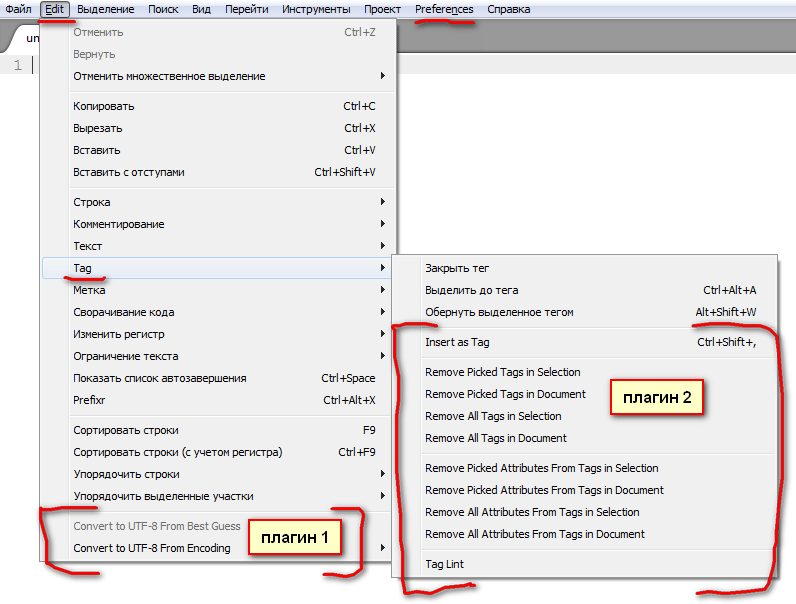

Решил и я вложить свой небольшой вклад в развитие замечательного текстового редактора Sublime Text (релиз 2-й версии которого, кстати, вышел несколько дней назад).
Я сделал русскоязычное меню для тех пользователей, у которых есть проблемы с английским языком, да и самому мне все же приятнее иметь русскоязычный интерфейс (хоть и англоязычный мне понятен).
Особенности локализации Sublime Text
Вообще-то в Sublime Text возможность локализации не предусмотрена вообще, а ее очень не хватает. Единственное, что в данный момент можно сделать в этом плане — перевести на русский язык соответствующие фразы в файлах меню (которые, по сути, являются текстовыми файлами), что я, собственно, и сделал.
Есть, однако, один неприятный момент, связанный с русификацией. Если у вас установлены какие-либо плагины, которые добавляют в меню свои пункты, то в этом случае родительские пункты соответствующего меню остаются непереведенными (хотя по сути они переведены). На следующем скриншоте это хорошо видно.

Конечно, можно зайти в файлы меню этих плагинов и перевести в них текст, но, к сожалению, мне невозможно предугадать, какие вы будете устанавливать плагины, поэтому я не могу к основным файлам меню Sublime Text прикладывать еще и русифицированное меню каких бы то ни было плагинов.
Имейте это в виду.
Скачать
Чтобы получить частично русский Sublime Text, скачайте архив для соответствующей версии и следуйте инструкции по установке.
Русифицированное меню для Sublime Text 2
Дата последнего обновления: 04.06.2013
Русифицированное меню для Sublime Text 3
Дата последнего обновления: 23.09.2016
Если вы желаете отблагодарить автора финансово, воспользуйтесь следующей формой, указав произвольную сумму рублей:
Все очень просто. Распакуйте скачанный архив и скопируйте все файлы с расширением .sublime-menu (кроме папки «backup») в одну из следующих папок в зависимости от вашей операционной системы, подтвердив замену (если папки «Default» по указанному пути нет, то создайте ее):
|
ОС и тип установки |
Путь |
|
Windows 7/8/10 |
c:\Users\Имя_пользователя\AppData\Roaming\Sublime Text 3\Packages\Default\ |
|
Windows XP |
c:\Documents and Settings\Имя_пользователя\Application Data\Sublime Text 3\Packages\Default\ |
|
Windows (портативная установка) |
\папка_с_установленным_Sublime_Text\Data\Packages\Default\ |
|
OS X |
~/Library/Application Support/Sublime Text 3/Packages/Default/ |
|
Linux |
~/.config/sublime-text-3/Packages/Default/ |
Обратите внимание, что в названии папки «Default» первая буква должна быть заглавной. Если вы назовете ее «default», то пункты меню продублируются.
В папку «backup» я поместил оригинальные файлы меню Sublime Text на случай, если вы захотите их восстановить.
По поводу качества перевода
Если вы считаете, что какие-либо пункты меню могут быть переведены более понятно и грамотно, смело предлагайте свои варианты в комментариях, это приветствуется.
Как я переводил
Это просто так, к сведению. Процесс локализации может показаться очень муторным занятием (поскольку помимо текста, который нужно перевести, там еще много прочего текста). Однако я для себя упростил эту задачу. Посидел несколько часов и написал под это дело специальный скрипт на PHP (особых знаний для этого не потребовалось).
Суть его в следующем — сначала скрипт пробегается по каждому из файлов меню и создает новый файл в JSON-формате, куда вставляется текст, подлежащий переводу (часть пунктов перевода пришлось вставлять руками из-за особенностей кода меню), который я там же и перевожу на русский. Затем скрипт повторно пробегается по каждому файлу меню и заменяет соответствующие пункты на русифицированные из JSON-файла.
Таким образом, в дальнейшем, если разработчик Sublime Text дополнит меню, мне не составит труда быстренько добавить и перевести новые пункты.